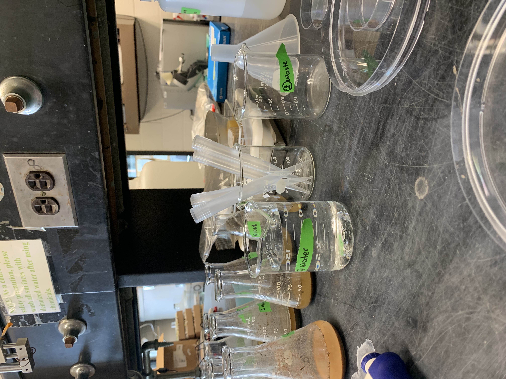
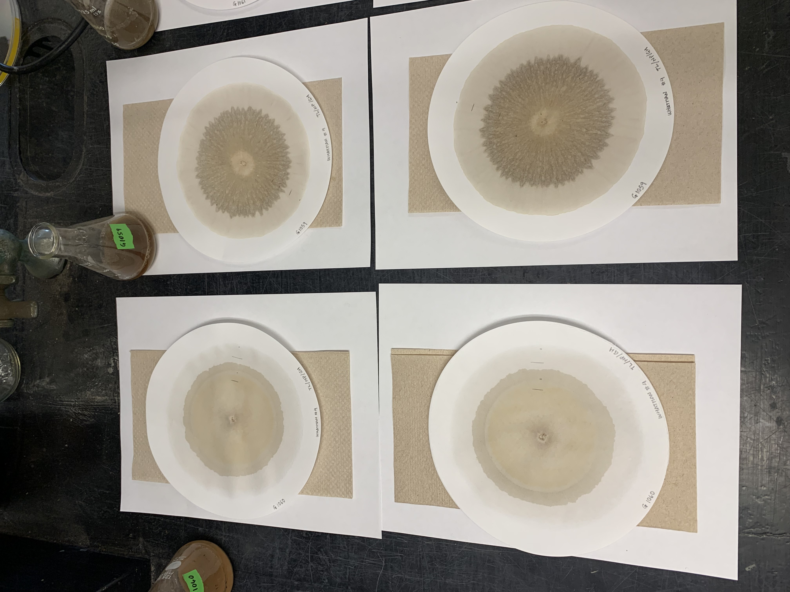
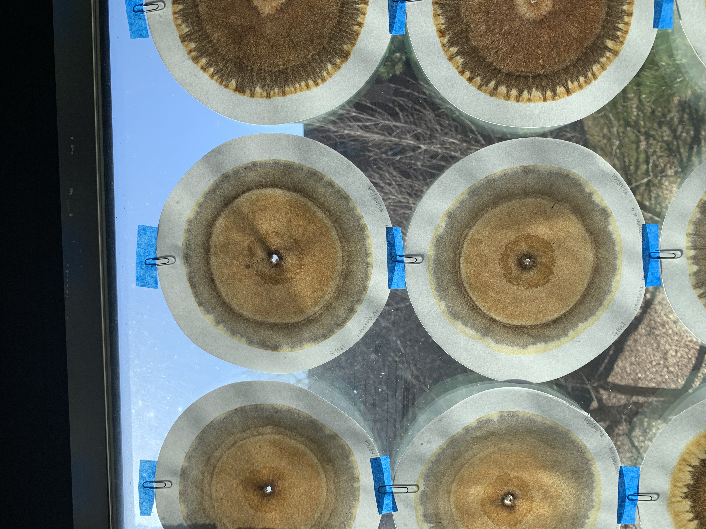

4 Chromatography
Last edited: 03NOV2023 NP
This is not a full protocol yet, just notes. Nora will build on it.
Link to full protocol (pdf)
4.1 Preparation
Air dry, pulverize, and sieve samples to 2mm
Label 125mL Erlenmeyer flasks with sample codes; measure 5g soil into each. We did not use the analytical balance for this. This can be done ahead of time!
Use Whatman #4 filter paper to cut wicks; Gaby has a piece of laminated square grid paper to get each piece to be 0.5x0.5in (I believe that is the measurement). Tightly roll each into a wick
- Each sample needs 2 wicks (one for AgNO3, one for soil solution); if doing duplicates of each sample, each needs 4 wicks
Count out one #4 filter paper for each sample; poke a tiny hole in the middle for the wick to go in and label with pencil
Hole should be 1/16 inches in diameter; Gaby has a good tool for this
Make one small pencil mark
1.5inches from the center and one2 ⅜inches from the center of each filter paper [edit: update these measurements for 18.5cm; 15cm filters should be used]

Make 0.5% AgNO3 solution. Should be stored in a brown bottle and not exposed to light
0.5% solution = 5g AgNO3 / 1L H2O → 2.5g / 0.5 L → 1.25g / 250mL
Reasoning: 1L = 1000mL and the density of water is 1g/L, so there are 1000g/1L. 10% by weight would be 100g/1L, 1% would be 100g/1L, 1% would be 10g/1L, and 0.5% would be 5g/1L. Checked with Gaby 03MAY2023
This does not need to be made on on a stirrer; AgNO3 is H2O soluble
Make 1% NaOH solution
Using the extra pure solution (50% NaOH by weight), add 20mL solution per 1L H2O
We need to dilute the 50% NaOH solution 50 times
CAS: 1310-73-2. Kept in flammable liquid storage cabinet underneath fume hood in S434. Because it’s a liquid, just mix them in 1L Nalgene bottles.
Set out one large petri dish and one small one for each sample
::: callout-warning
Are you processing foreign soils? Tape off a counter and have plenty of ethanol/bleach spray. Trash should go in an autoclave waste bag, not in a trash can
:::4.2 Procedure
- 5g soil in Erlenmeyer flask → each gets 50mL 1% NaOH. Do not add until doing procedure
- After NaOH is added, thoroughly mix the sample by swirling the flask. Swirl for 6 rotations, repeating 6 times, for 36 total rotations.
- Let flasks stand undisturbed for 15 minutes. Repeat the swirling process.
- Let flasks stand for 1 hour. Repeat the swirling process.
- After samples are swirled, let sit for 5 more hours. After the 6th hour (including hour in step above; 6 total hours), then chromatography can begin.
- Do not disturb the flasks at all during the resting period.
- Saturate filter papers with AgNO3 to first line, using the large/small petri dish and wick setup.
- Once saturated, they must dry completely with no light exposure. Consider making a sandwich with 1 piece printer paper, 1 paper towel, 1 filter paper, 1 paper towel, and 1 piece printer paper. See photo below. Store in a closed box.
The following photos were taken during a chromatography run as examples of setup and workflow.




4.3 Post-Procedure
Samples should dry on a bench for 3 hours, then get hung in a window
Nora gently attached a paper clip to each filter paper, then taped the paper clip to the window. Didn’t want to risk ripping the filter paper when taking the tape off
Chromas should develop in the window for 7-8 days. Window should not get direct sunlight, although a little bit seems to be fine
Chromas should be scanned on a high quality scanner (UIC or SWAC printer?) within 1-2 days of being fully developed
Store chromas with a sheet of paper in between each